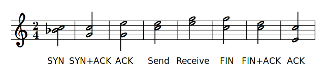

The Network in C-Major
Knowing what your system is doing on a network is not easy usually. It involves installing sniffer software such as Wireshark or Tcpdump. These tools present you with a very technical presentation of the network. If you are not taught how to interpret these symbols and numbers it will not be of much value to you. In this project I present a system which eavesdrop on the network to capture the packets and translate them into musical sounds.
Technical Description
The system listens to TCP packets which are send trough the network interface card (NIC). It maintains a session table of all TCP sessions it sees and uses the state of these sessions to generate harmonic chords. Only 2 notes are used to generate harmonics since tests showed states changing so quickly that it generates multiple notes almost at once. If the notes are chosen carefully a full chord of at least 3 notes is audible most of the time. The following table is used to generate chords.
| TCP packet flag/direction | Notes relative to base note | Description |
|---|---|---|
| SYN | Note 1: 0, Note 2: -2 | TCP session handshake start |
| SYN + ACK | Note 1: 0, Note 2: -5 | TCP remote handshake confirm |
| ACK | Note 1: 4, Note 2: -5 | TCP local handshake confirm |
| Sending Data (Up) | Note 1: 4, Note 2: 0 | Sending data to remote peer |
| Receiving Data (Down) | Note 1: 7, Note 2: 4 | Receiving data from remote peer |
| FIN | Note 1: 0, Note 2: 7 | TCP session termination start |
| FIN + ACK | Note 1: 0, Note 2: 4 | TCP remote termination confirm |
| ACK | Note 1: -8, Note 2: 0 | TCP local termination confirm |
Or put in a musical score:

Use case, strengths & limitations
While testing the system. for instance, the chords gave a very direct insight in a failing IRC client trying to connect to an IRC server. Before the IRC client responded with a failed connect it was already clear that the IRC server was not responding. It was even clear that the client had tried to connect 5 times using 2 TCP sessions. Another example while listening to http traffic showed that there was data being send and received through a stable HTTP session. This was very irregular compared to every other HTTP session. It turned out that this was caused by a Dropbox client.
While the chords are not as detailed as a regular tcpdump it does provide a very intuitive way too interpret what's going on through the NIC. Since it's audible it is very supportive while debugging an application or session. No need to switch screens or apps to watch what's going on. The chords will tell immediately while keeping the hands and eyes free. The harmonics also make it pleasant to listen to.
The system is limited to the number of usable octaves. I've found this number to be a maximum of 6 to 8 to stay pleasant for the ears. It depends on the instrument as well however this limit makes it challenging to interpret if listening to too much traffic at once. The chords are losing expression when too many sessions are captured in a short time frame.
Installation
The repository is hosted at github: https://github.com/sphaero/tcp_percept
The system is build in "PureData":http://puredata.info and using a custom external which wraps "Libpcap":http://www.tcpdump.org/. It's only tested on Linux. The external is currently hardcoded to the 'wlan0' network device. To set a different device you'll need to change the following line in pd-tcp-percept.c:
x->dev = "wlan0"; /* capture device name */
To compile execute the following commands from the repository root. Make sure you have the PureData and libpcap libraries.
gcc -DPD -I/usr/include/pd/ -O2 -g -Wall -c -fmessage-length=0 -fPIC -MMD -MP -MF"pd-tcp-percept.d" -MT"pd-tcp-percept.d" -o "pd-tcp-percept.o" "pd-tcp-percept.c"
gcc -shared -o "tcp_percept.pd_linux" ./pd-tcp-percept.o -lpcap
Then execute the following command to start PureData with the external and the patch:
pd -lib tcp_percept tcp7.pd
Setting up Midi
Midi is used to generate the chords so you'll need a MIDI instrument to create audible ouput.
On a linux system you could install Amsynth. To connect PureData to Amsyth using Alsa:
# list MIDI interfaces
aconnect -l -i -o
client 0: 'System' [type=kernel]
0 'Timer '
1 'Announce '
client 14: 'Midi Through' [type=kernel]
0 'Midi Through Port-0'
client 128: 'amSynth' [type=user]
0 'amSynth MIDI IN '
1 'amSynth MIDI OUT'
client 129: 'Pure Data' [type=user]
0 'Pure Data Midi-In 1'
1 'Pure Data Midi-Out 1'
# connect PureData Out to Amsynth In
aconnect 129:1 128:0